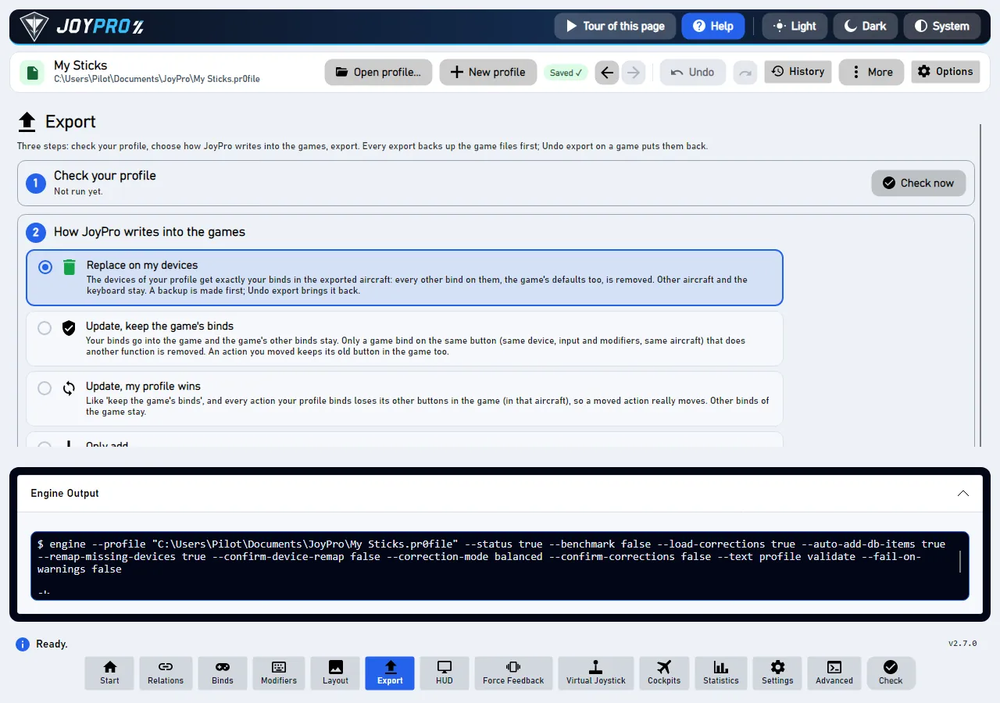

#출력
토글 버튼작성됨툴팁 JoyPro 엔진이 출력한 내용 (마지막 작업의 세부 정보)
JoyPro의 모든 버튼은 JoyPro 엔진의 명령을 실행합니다. 아래쪽 상태 줄은 짧은 결과("게임 6개 중 5개 내보냄")를 알려 주고, 출력 패널은 자세한 내용을 보여 줍니다: 정확한 명령과 엔진이 출력한 모든 것. 무언가 예상대로 되지 않았을 때 가장 먼저 볼 곳입니다.


$ engine으로 시작하며, 프로필과 모든 옵션이 포함된, JoyPro가 실행한 정확한 명령입니다.[stderr] 아래: 오류와 진행 상황 줄(있을 때만).빨간 상태 줄이나 "출력 참고"는 자세한 내용이 여기 있다는 뜻입니다. 문제를 보고하려면 설정 > 문제 신고를 쓰세요. 출력의 세션 로그와 그 밖에 필요한 모든 것을 모아 주므로 직접 복사할 필요가 없습니다.
$ engine ... 줄을 JoyPro 폴더의 터미널에 복사하면 같은 명령을 직접 실행할 수 있습니다(엔진 명령줄 참고).버튼 한 번 누르기, 명령부터 상태 줄까지:
| # | 누가 | 일어나는 일 |
|---|---|---|
| 1 | 사용자 | 버튼을 누릅니다(예: 지금 내보내기). |
| 2 | JoyPro | 엔진을 실행합니다: engine --profile ... dcs export --mode clean .... |
| 3 | 엔진 | 진행 줄과 함께 (텍스트 또는 JSON으로) 답합니다. |
| 4 | JoyPro | 출력 패널에 "$ engine ...", 답, [stderr]을 보여 주고, 같은 내용을 세션 로그 engine-output.log에 씁니다. |
| 5 | JoyPro | 상태 줄 하나를 보여 줍니다. |
MainWindow.axaml(EngineOutputExpander와 그 GridSplitter. 높이는 MainWindow.axaml.cs가 ui-layout.json에 보관), MainWindowViewModel.cs: RunEngineAsync가 BuildOutputText에서 LastCommandText와 OutputText를 설정하고($ <command>, 선택적 [gui-note], stdout, 그다음 [stderr]), LimitOutputPane이 패널 텍스트를 자르며, AppendSessionLog가 로그 폴더에 세션 로그 engine-output.log를 씁니다(진행 줄은 단계마다 몇 개로 줄임). 백그라운드 실행(background: true)은 세션 로그에만 기록됩니다. 참고: 로그 기록.
이 페이지의 바탕이 된 기능 문서(저장소에서 생성):
프로그램 소스에서 읽은 조작 요소 1개: 작성됨 1개, 소스의 정보(툴팁, 코드 주석, 엔진 호출)가 있는 것 0개, 아직 보완할 것 0개.
툴팁 JoyPro 엔진이 출력한 내용 (마지막 작업의 세부 정보)